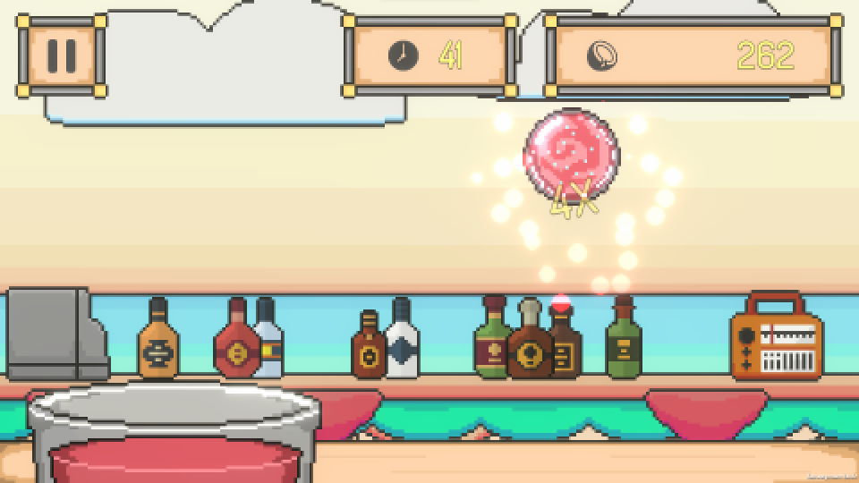
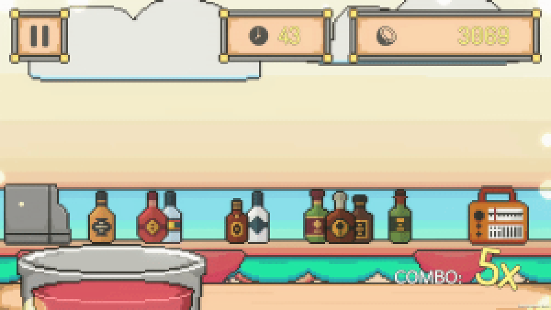

GMTK Game Jam 2023
Smoothie Splash: Fruit Merger
A GMTK Game Jam 2023 entry on the theme “Roles Reversed”: Fruit Ninja, flipped.

- Role
- Programmer, most art
- Team
- 2 people
- Engine
- Unity, WebGL
- Made for
- GMTK Game Jam 2023
Overview
Instead of slicing fruit, you catch it. Merge two fruits into a juice ball, then dunk it in the smoothie cup before the fruit gets away.
My role
I built the game and made most of its assets during the jam, with Nymphel Jhoy M. Rafanan contributing additional art.
What I learned
This was an early project. The two hardest parts were making drag controls feel responsive and moving the game cleanly between its states: menus, play, merging and scoring. I wrote my own simple state machine for it. It worked for the jam, but it showed me why clear states and transitions matter.
What's next
I plan to revisit Smoothie Splash and rebuild its core with what I know now, starting with a proper state machine and polished controls.
Links
Screenshots

